01_dog_eye_macro.jpg — Eye 1
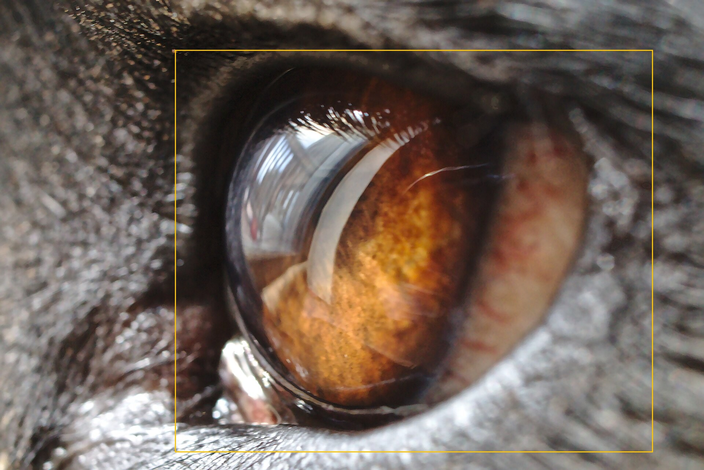
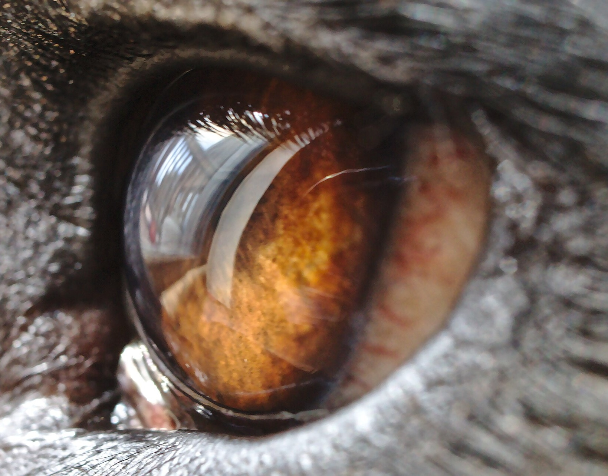
Iris_atrophy62.8%
Cataract15.6%
Healthy12.5%
Cherry_eye9.0%
Question: Can one compact report make every model's actual behavior visually inspectable?
Audience: Logan and the BLU research team.
August 26, 2026 archive · Sources & provenance · Markdown source record · GitHub repository
YOLO eye detection followed by the four-label classifier.


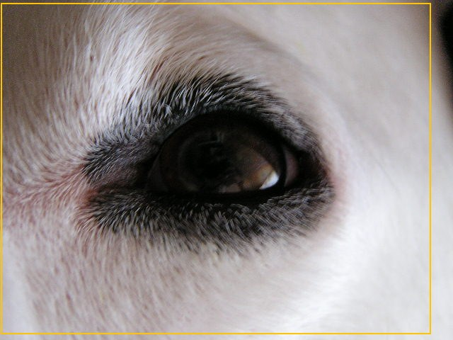
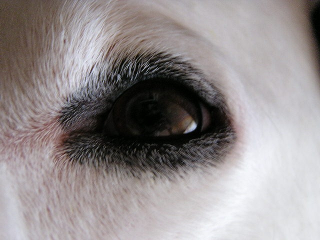
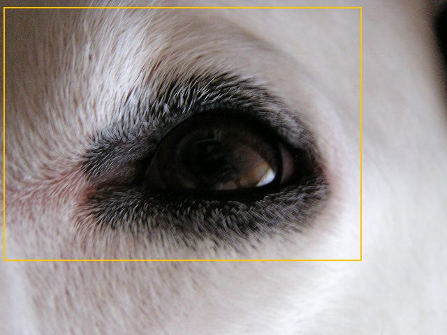
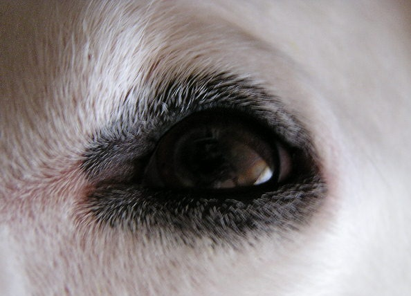
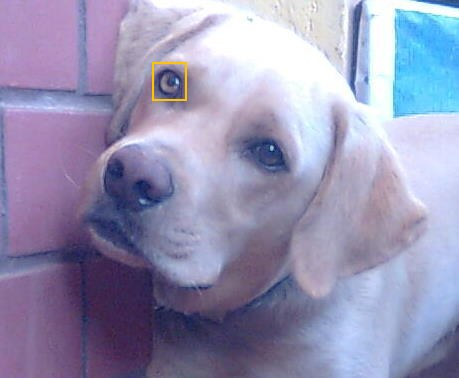
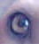
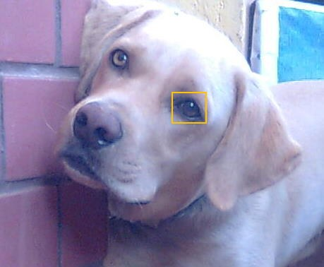
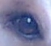
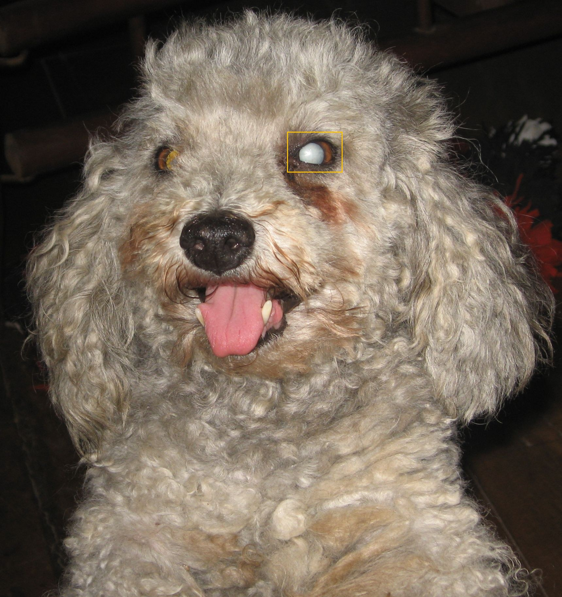
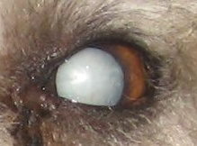
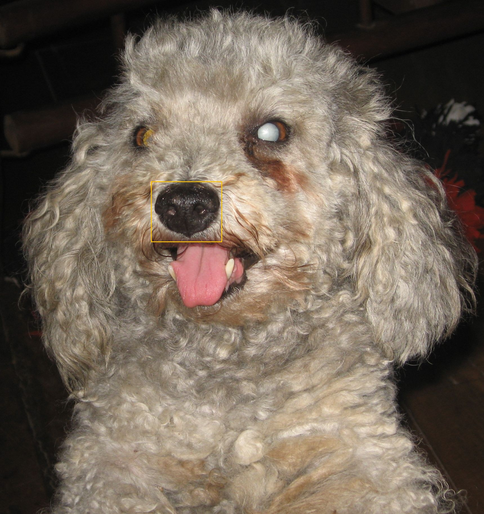
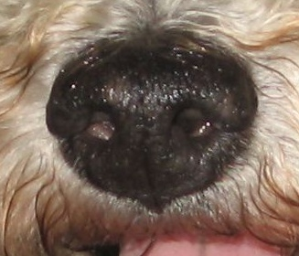
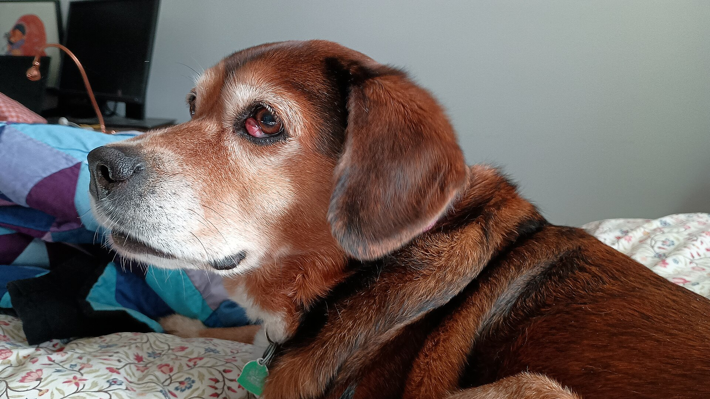
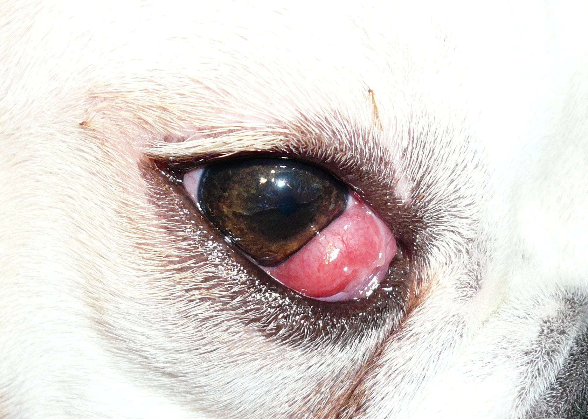
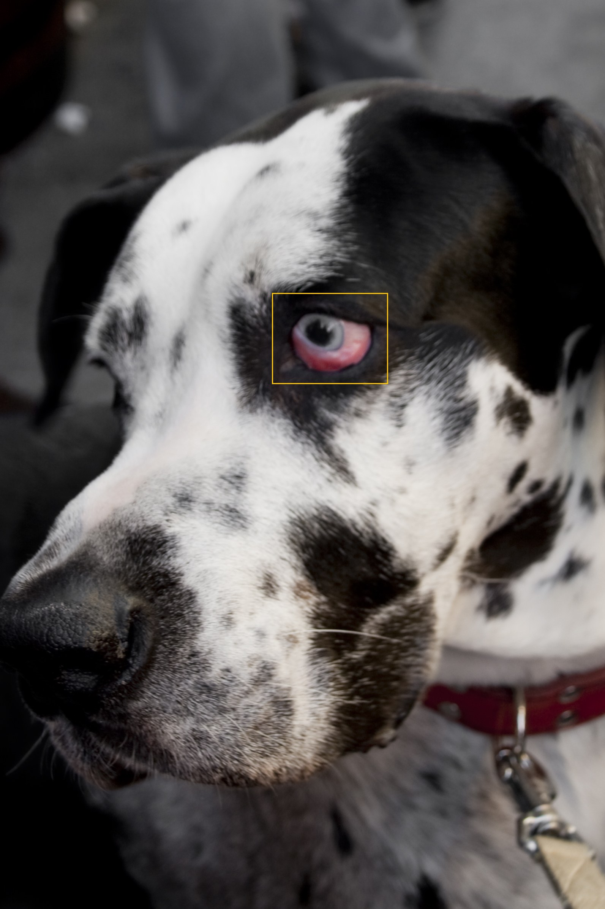
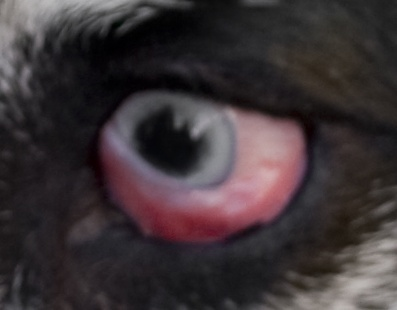
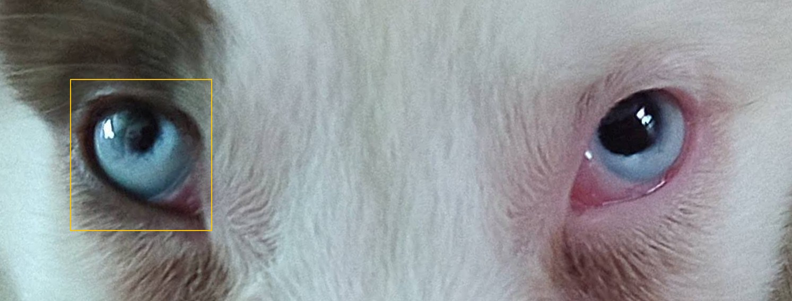
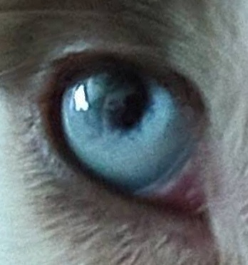
The same YOLO checkpoint followed by the separate six-label classifier.
Whole-image 20-label predictions; no eye crop.
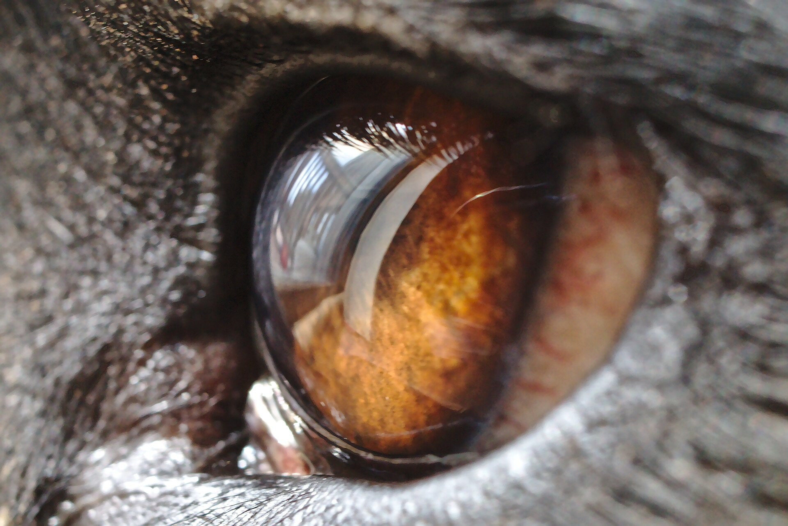
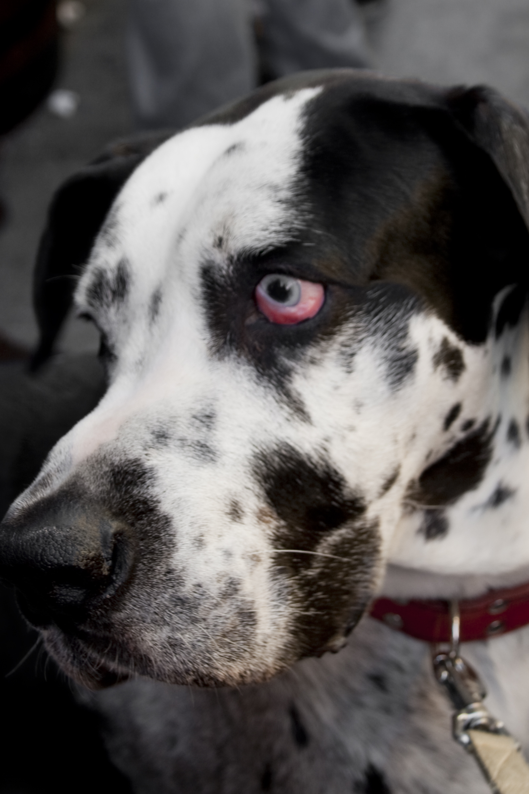
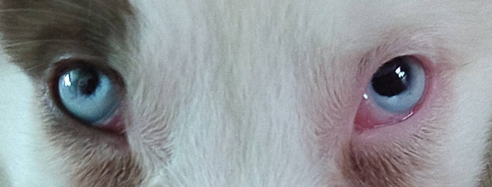
Manual boxes and positive/negative clicks for pupil and iris. This tests feasibility; it is not automated or validated.
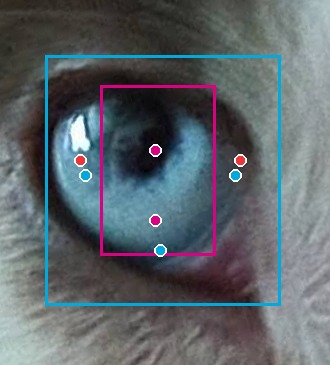
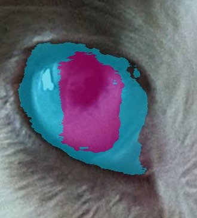
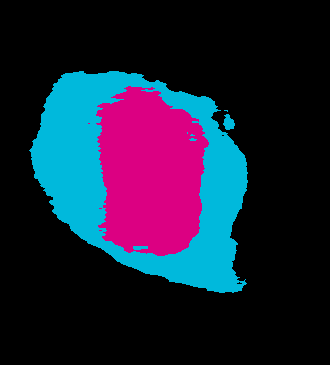
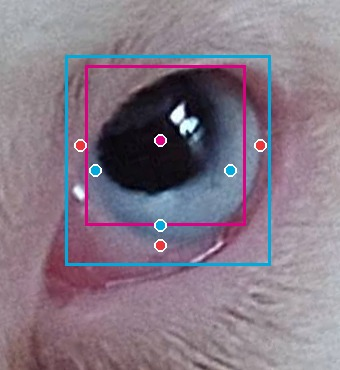
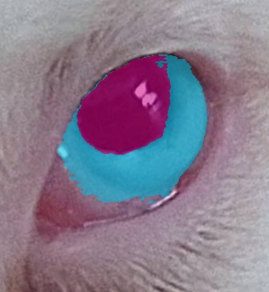
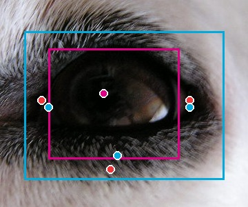
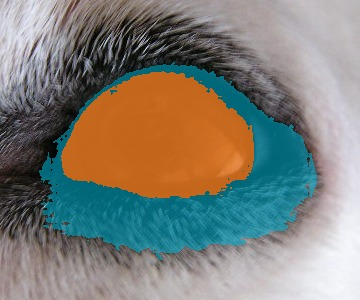
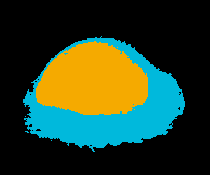
Crops, boxes, masks, and overlays are BLU Dog annotations of these photographs. CC BY-SA adaptations retain their respective source licenses. Full provenance and licenses.